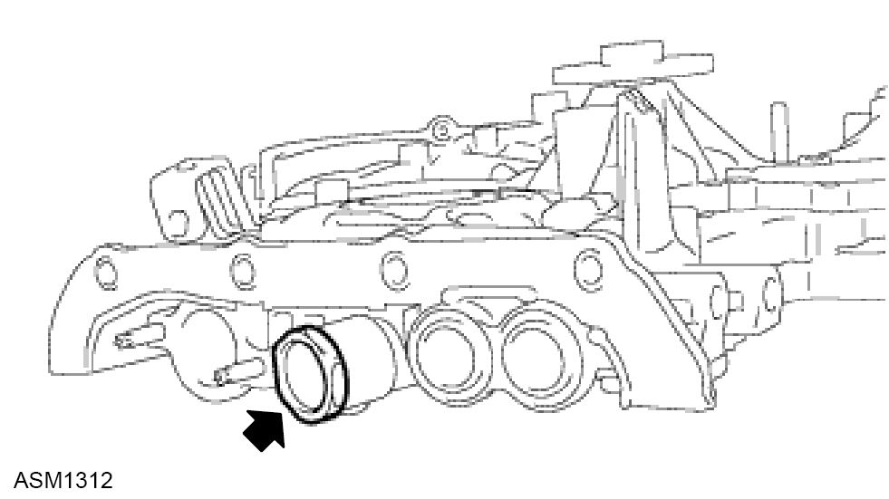
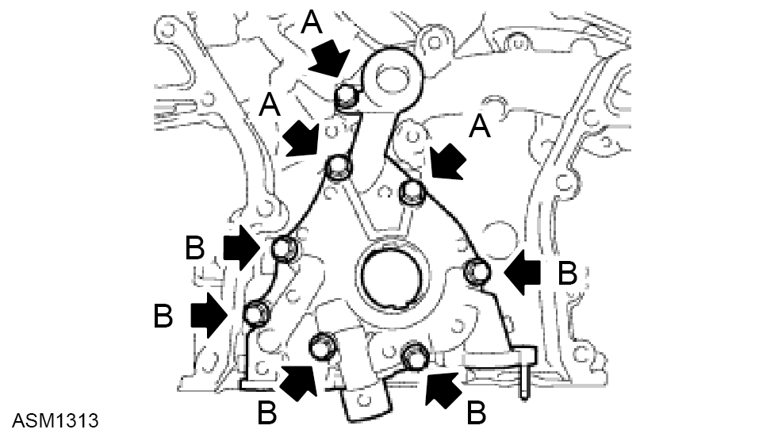
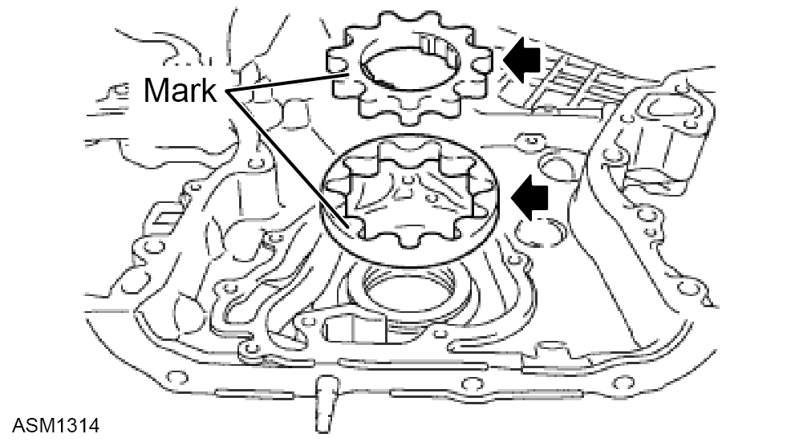

Oil Pump Assembly - V6
Print
Operation Code: 40.15.01-02
Removal
- Remove timing chain cover. Refer to procedure.

- Remove plug from oil pump assembly. Torque 49 Nm.
- Remove relief valve and spring.

- Remove bolts (x8) securing oil pump assembly to timing chain cover. Torque 9Nm

- Remove oil pump drive rotor and driven rotor.
Installation
- Installation is the reverse of removal procedure except for the following:
- Coat drive and driven rotors with engine oil.
- Install drive and driven rotors into timing chain cover with marks facing outward (oil pump cover side).
- Check that rotors revolve smoothly.
- Coat oil pump relief valve with engine oil.